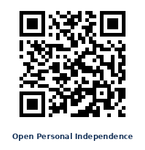

Install Personal Independence
Bladder-health diary — for patients, and the providers who care for them.
Personal Independence tracks voids, fluid intake, and neuromodulation program history — converting entries into easy-to-scan charts and trends that empower patients and their providers to take positive steps toward regaining control of an overactive bladder.
Open Personal IndependenceOpen it on your phone — fastest way

What to expect on first launch
When you first open the app you'll land on the Log tab, ready to record your first void. Everything is labeled and the entry form is designed to be fast — most entries take under fifteen seconds.
How to install on your device
Personal Independence is a web app that installs directly from your browser. No app store download required. Once installed, it works offline for logging and viewing data; an internet connection is needed only for the Help Bot feature and for the first-time install.
iPhone or iPad
- With Personal Independence loaded in Safari, tap the Share button. On newer iPhones (compact Safari layout), it's inside the ⋯ menu at the bottom-right. On older iPhones or if Safari's tab bar is set to the top, it's the square-with-up-arrow icon in the bottom toolbar.
- In the share sheet, scroll the list of options down. Look for Add to Home Screen (an icon that looks like a square with a plus). On smaller iPhones it's often near the bottom of the list.
- Tap Add to Home Screen. A preview appears showing the app icon and name.
- Tap Add in the top-right corner to confirm.
- Go to your home screen and find the Personal Independence tile.
Android
- Tap the Open Personal Independence link or scan the QR code above. It should open in Chrome by default.
- If Chrome shows an Install or Add to Home Screen prompt at the bottom, tap it.
- If no prompt appears: tap the three-dot menu (⋮) in the top-right corner, then tap Install app or Add to Home Screen.
- Tap Install to confirm.
- The app icon appears on your home screen.
Desktop (Windows, Mac, Chromebook, Linux)
- Open Personal Independence in Chrome, Edge, or another modern Chromium-based browser. Firefox and Safari desktop do not currently support installing progressive web apps.
- Look for an install icon in the address bar — typically a small monitor with a downward arrow, or a circular +.
- Click it and confirm the installation.
- The app appears in your system's app launcher, Start menu, or Applications folder, and can be pinned to the dock or taskbar.
How to uninstall
Uninstalling Personal Independence removes the app from your device along with all of the data you have logged in it — void entries, intake records, stimulation history, and settings. If you want to keep any of that data, use the Export CSV buttons in the app's Settings tab first.
iPhone or iPad
- Long-press the Personal Independence icon on your home screen.
- Tap Remove App, then tap Delete App.
- To also clear the browser's stored data: open the iOS Settings app → scroll down and tap Safari → Advanced → Website Data → find
abmeapps.github.ioand swipe left to delete.
Android
- Long-press the Personal Independence icon on your home screen.
- Tap Uninstall, or drag the icon to the trash.
- To also clear stored data: open Chrome → three-dot menu → Settings → Site Settings → All Sites → find
abmeapps.github.io→ Clear & Reset.
Desktop
- Open the installed Personal Independence app.
- Click the three-dot menu in the app's title bar and select Uninstall Personal Independence.
- If prompted, check Also clear data, then confirm.